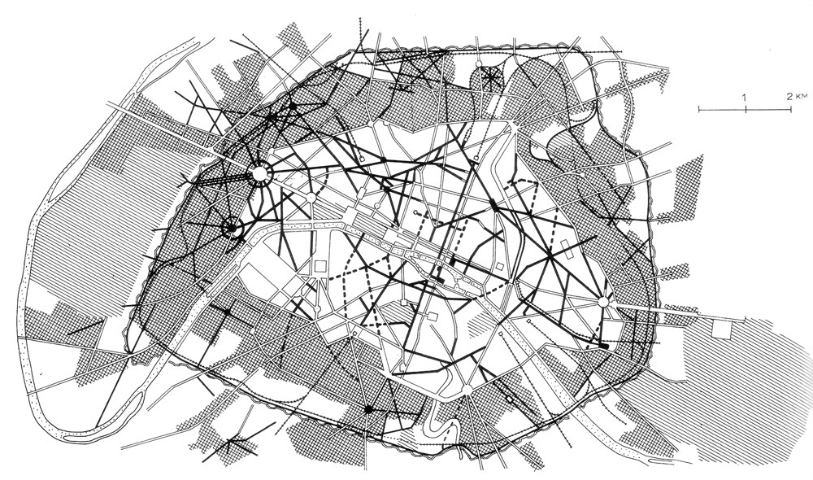
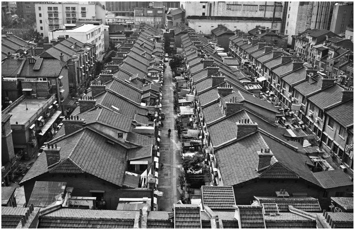
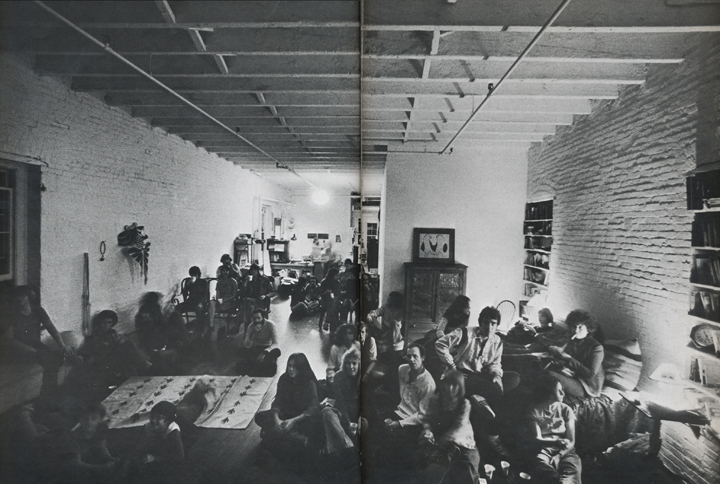
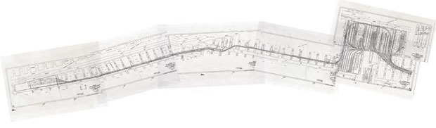
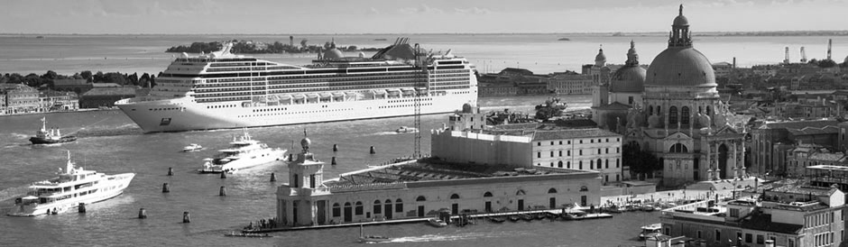
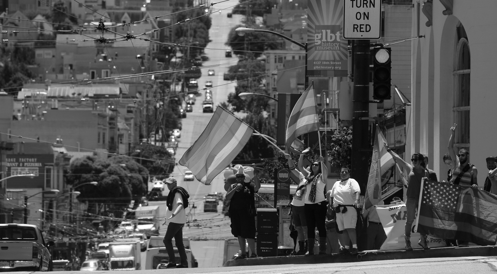
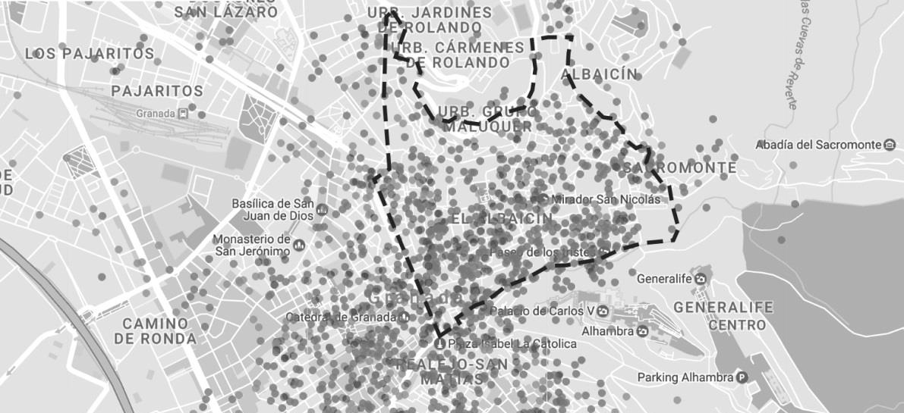

As Japonica Brown, from the Boston University, explains in The Gentrification Debates, “Gentrification is characterized by the movement of creative professionals, such as artists and writers, and, later, of other members of the middle class, such as educators and bankers, to central city neighbourhoods in search of affordable housing in close proximity to museums, music venues, and other cultural attractions that they value.”[1] By this definition, the process may seem as a harmless renovation of the people living in an area of the city, product of certain common cultural affinities.
On the other hand, Gina Perez writes “[...] an economic and social process whereby private capital (real state firms, developers) and individual homeowners and renters reinvest in fiscally neglected neighbourhoods through housing rehabilitation, loft conversions, and the construction of new housing stock. Unlike urban renewal, gentrification is a gradual process, occurring one building or block at a time, slowly reconfiguring the neighbourhood landscape of consumption and residence by displacing poor and working-class residents unable to live in ‘revitalized’ neighbourhoods with rising rents, property taxes, and new business catering to an upscale clientele.”[2] This definition explains the back part of the process, the economic investment that consequently renovate the inhabitants of the neighbourhood.
So we could say that both economic and social aspects are the two faces of it. Nevertheless, the causes that motivate the upper-class people to move a certain neighbourhood are different. We’ll look through some examples in the followings parts.
John R. Logan and Harvey L. Molotch see the city as a “Growth Machine, one that can increase aggregate rents and trap related wealth for those in the right position to benefit.”[3] When studying the expansion of a city along the years, we could think that the growth process has followed its natural path and the result we see today is, in a certain way, arbitrary. However, as John and Harvey say, elites control when to develop a part of the city. According to Gina, they have the capacity and the economical facilities to choose a neighbourhood with low rents and slowly start renovating it through an architectural process. Consequently, the price of the rents increase and people with a better economical income start moving to the area.
If we have a look at the biggest process of gentrification taking place right now, the island of Manhattan, we’ll discover that the reasons are different depending on the area we point to. Furthermore, looking at other examples in history is clear to see that exits a wide range of reasons that have led to a full gentrification.
Researchers seems to agree that the first case of Gentrification was after the Haussmann renovation of Paris. A number of architectural changes led by the Baron Hassmaunn renewed the dirty and unhealthy city. In words of Stephen Potyondi, “Two centuries ago the old city centre was one of the least attractive parts of the capital. Crowded with the tenements of the lower classes and long ignored by municipal authorities, it was so repellent that those who could afford to simply stopped living there”[4]. Even though the case of Paris follows the line of the other Gentrification cases that have happened after it, is fair to say that the background was a real necessity in terms of life conditions in the before-Haussmann Paris.
“The creation of pedestrian spaces led to the emerge of strolling, or flânerie, as an agreeable pastime and both changed the way streets were used by Parisians and described by writers. Boutiques and cafés sprang up on either side of the road, enticing, consumers with their dazzling storefronts, while the presence of so many people in the street gave birth to people-watching and even permitted chance encounters with strangers. For the first time, the street became a desirable place to linger rather than merely an obstacle to be crossed in order to arrive elsewhere.”[5]
Two centuries later, there is another remarkable example of a city in which the way it has evolved along the years has turned it into an impractical place to live. In the city of Shanghai, China, the constant expansion in both horizontal and vertical planes has led to an oppressive and stressful rhythm of life. In an attempt to escape from this labyrinth of skyscrapers and rushing businessmen, a small neighbourhood remains hidden in the spine of the city’s most commercially vibrant district. “An 80-year-old housing compound consisting of 198 three-story row houses.”[6]
This time, in opposition of the standards of the globalization, inhabitants of the modern city try to get back in touch with the classic way of living, almost as a village in the middle of Shanghai. An escape from the overcrowded streets. This promoted an internal change in the architecture of the neighbourhood in a try to increase the amount of residents in the houses. “At this point the structure of the community changed rapidly to accommodate four to five times more residents than was originally planned. A typical row house unit consists of three stories, with one courtyard, one living room, two bedrooms, two bathrooms, one kitchen, one garage, and two storage rooms. Since 1949, apart from the kitchen and bathrooms shared by all neighbours living on the same floor or in the same row, each of these rooms had been used as a bedroom.”[7]
Gentrification as we know it nowadays is a recent thing. Sharon, referring to the way of living in cities as NY, writes “Until the 1970s, living in a loft was considered neither chic nor comfortable – if the possibility was considered at all.”[8] So what made people change their minds and NY the city we know today? The mix of an new interest in art and the industrial heritage by an increasing number of middle class people (not only upper-class as it used to be) “led them first to try to protect space for artists and historic preservation and then to appropriate this space – which was often in loft buildings”
This false appearance of “living poor” is precisely described in this phrase: “We visit the docks in London but not in Rotterdam because commerce is romantic only when it has vanished. Only people who do not know the steam and sweat of a real factory can find industrial space romantic or interesting.”[9]
Artists as Robert Rauschenberg and James Rosenquist, both from NY, lived in a rented loft in the south part of the city during the first years of their career. This ways of living, considered until that moment as something impractical, started to be seen as an open minded style. A series of art related parties and semi amateur expositions took place during those first years in several lofts, most of them without running water or heat. The old concept of the artist changed from the “poor young man trying to survive” to a one of successful upper-class. “It was a far cry from the days of penniless bohemianism when the lean and hungry artist had themselves resembled thieves.”[10]
In the field of music, Dj David Mancuso was the precursor of “by invitation only” parties, with them taking place in lofts of NY. The underground nature of the parties, along with the mysticism of the high inner spaces of the lofts helped to the success of his career.
This times in the history of the city led it to the Manhattan we know nowadays. The neighbourhood where Rauschenberg was stablished is the well-known SoHo, home of artists coming from all parts of the world and minded to pay crazily expensive rents. The island is in a constant gentrification as people move in and out changing the social and cultural aspects of the different neighbourhoods.
The last gentrification (and biggest) in NY started in 2009 when the High Line was finally opened. With more than 5 million estimated visitors to the site each year, “Many small businesses and moderate-income residents have been forced to relocate due to rising land values, while even those who can afford it have begun to experience the downsides of living or working in an area that panders to tourists.”[11] This is an example of what considered “Enviromental Gentrification”, an urban movement with the intention of improving the life quality of the inhabitants that turns out to decrease their life quality. .
Consequently, a number of new apartment buildings has started to appear in the area surrounding the park which prices are completely off sight for the most number of people trying to move into the city. In a way we can see a certain similarity in between Shanghai’s neighbourhood and the High Line: places that offer an advantage compared with the rest of the city, not only cultural but also in quality of life. As the title of this article says, “Are our new parks Trojan horses of gentrification?”[12] .
Another example of tourism gentrification is Venice. As Salvatore Settis writes in his book If Venice dies, “Only once Venice population decreased as much as right now: during the Bubonic Plague. It took a full century to recover the number of inhabitants.”[13]. In numbers, the population of the Italian city was 174.808 back in 1951, a huge number compared with the 54.926 that inhabit the city nowadays. The reason is the vast number of tourists that invade the city every day. “Someone closes his hardware store and the day after is a mask store. The problem is that we already have hundreds of mask stores, we don’t need anymore!”[14] This is slowly converting the city into a place where kids can’t play in the squares because they are full of bar terraces, where is almost impossible to find a bakery or where, even considering that its university character, bars close at 11pm because they are tourism focused, .
Not only the tourism situation doesn’t seem to get any better in the following years, but also the fact that the city is constantly been damaged by its floating condition makes even harder for the citizens to keep the properties in good conditions.
Gentrification can also occur as a necessity for a certain group of people to create a living space according to their shared sexual preferences. In words of Levine, what he considers `gay ghettos are characterised by the presence of ”[….] gay institutions (like bars, bookstores, restaurants and clothing stores) in number, a conspicuous and locally dominant gay subculture that is socially isolated from the larger community, and a residential population that is substantially gay”[15]. All this neighbourhood, created mainly in the 1960s, were created as an escape route for this collective in opposition to the homophobia predominant by that time. Some remarkable examples in North America are San Francisco (first and biggest case), West Hollywood in Los Angeles, West Village in NY, Bay Village in Boston and Cabbage-Town in Toronto.
As other gentrification processes, the gay gentrification feedbacks itself. ”Their presence encourages the opening of bars and other businesses that cater to a gay clientele. A gay ghetto provides them with a territorial base the development of a gay movement, which can then become a force in municipal politics.”[16].This movement quickly started spreading around the world, being The Marais in Paris the biggest case. “[...] the Marais had the highest gentrification rate of any other neighbourhood in the capital in the period 1975-82”[17]. In Madrid, the neighbourhood of Chueca is considered the biggest case of gentrification in Spain. According to researchers, the LGTB gentrification doesn’t usually start as an economical plan by the elites but as a natural movement by the collective which, consequently, leads to an increase in the cost of living.
The historical character of a city can also lead to a progressive gentrification. In Granada, the neighbourhood of The Albaicín was historically the muslin settlement facing The Alhambra, in one of the two hills overlooking the city. After the Christian reconquer, the neighbourhood started losing population due to the steep streets and the delinquency happening in its narrow streets. In most part of the 20th century, the neighbourhood was considered as a partially isolated district from the rest of the city. It wasn’t after the 60s, when the tourism focused politics started rehabilitating the area, that people started to look again to the Albaicin as a potential living space.
The visible consequence nowadays is a decrease of the amount of inhabitants as opposition of an increase in the number of rented houses for tourists. In the image below, the number of AirBnb apartments in the area show the potential business in the hill, which keeps getting bigger as less and less people live the neighbourhood.
In 2009, some anti-displacement movements protested against the way that the City Council and the Government of Andalusia “have endeavoured to destroy the popular character of the traditional neighbourhood of Granada, transforming it into a touristic business [...] The injected EU funds have served as advertisement to attract real estate agencies and big owners who are transforming the neighbourhood into a thematic park, with new houses and richer residents, where old residents have no place.”[18].
[1, 2] Brown-Saracino, J. (2013). The Gentrification Debates. 1st ed. London: Taylor and Francis.
[3] Harvey Molotch (1976). The City as a Growth Machine. American Journal of Sociology
[4, 5] Potyondi, S. (2011). The Discovery of the Street: Urbanism, Gentrification, and Cultural Change in Early Ninetheenth-Century Paris. University of Alberta
[6, 7] Non Arkaraprasertkul (2016) Gentrification from within: urban social change as anthropological process, Asian Anthropology
[8, 9, 10] Sharon Zukin (1989) Loft Living: Culture and Capital in Urban Change, Rutgers University Press
[11] Jeanne Haffner (2015) The dangers of eco-gentrification: what's the best way to make a city greener? , The Rockefeller Foundation
[12] Aaron Betsky (2016) The High Line effect: Are our new parks Trojan horses of gentrification?, Metropolis Mag
[13] Salvatore Settis (2014) Se Venezia muore
[14] Mònica Bernabé (2016) Los venecianos huyen de Venecia, El Mundo Newspaper
[15, 16, 17] Michael Sibalis (2004) Urban Space and Homosexuality: The Example of the Marais, Paris' 'Gay Ghetto',
[18] Alasbarricadas (2009) in Moreh,